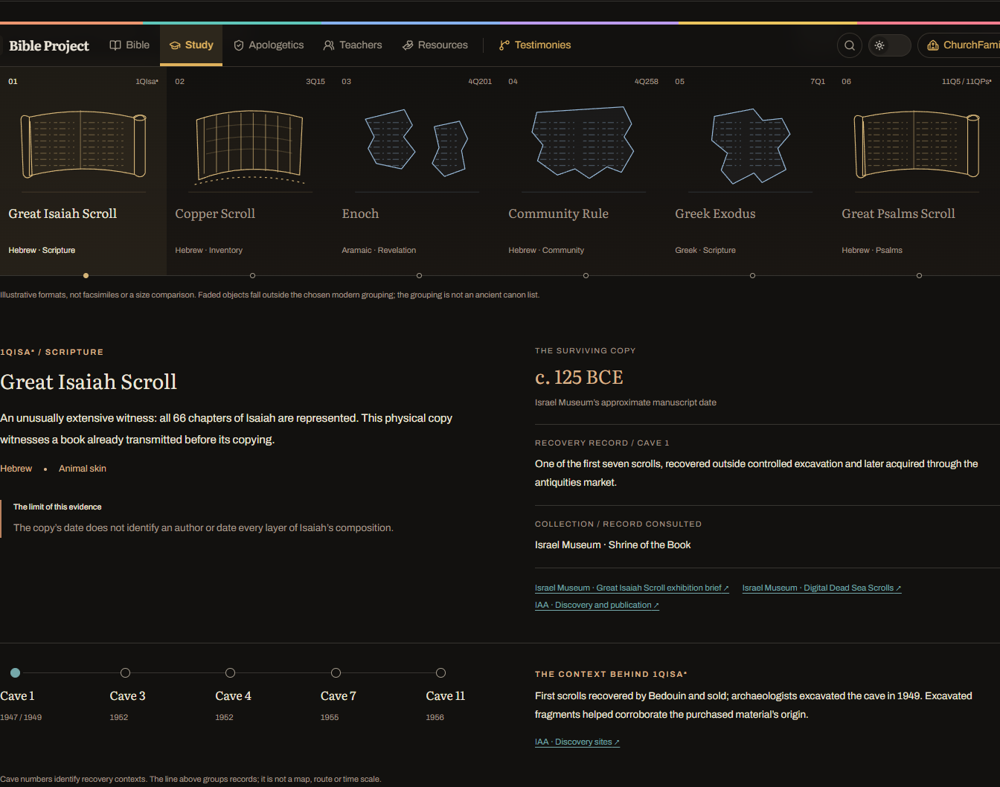
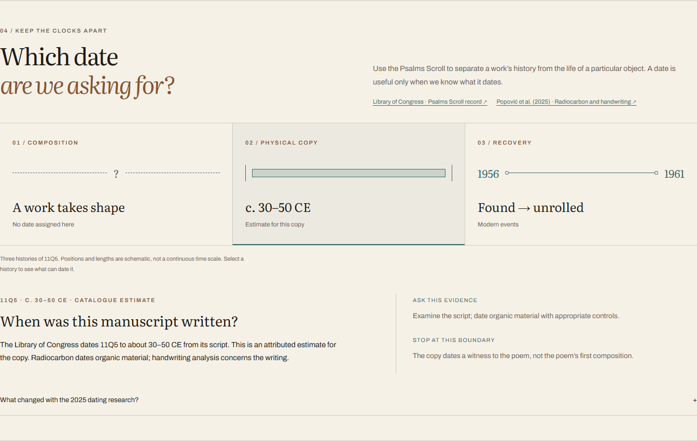
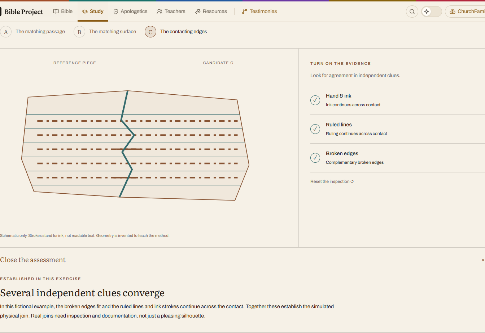

Design galleryThe Dead Sea Scrolls · beyond the opening
Rendered local implementation: a manuscript collection, three histories of one scroll, and an evidence workbench. These are captured screenshots; the local study has the working controls. The fixed header visible within some captures belongs to the site, not these diagrams.
Six objects, one inspection desk

Three histories, three kinds of evidence

Independent clues, different conclusions
